帧 0 · 00:00.00
越界遮罩面积 / 允许区面积（首个）
- 越界遮罩面积 / 允许区面积 2.8008%（要求至多 0%）

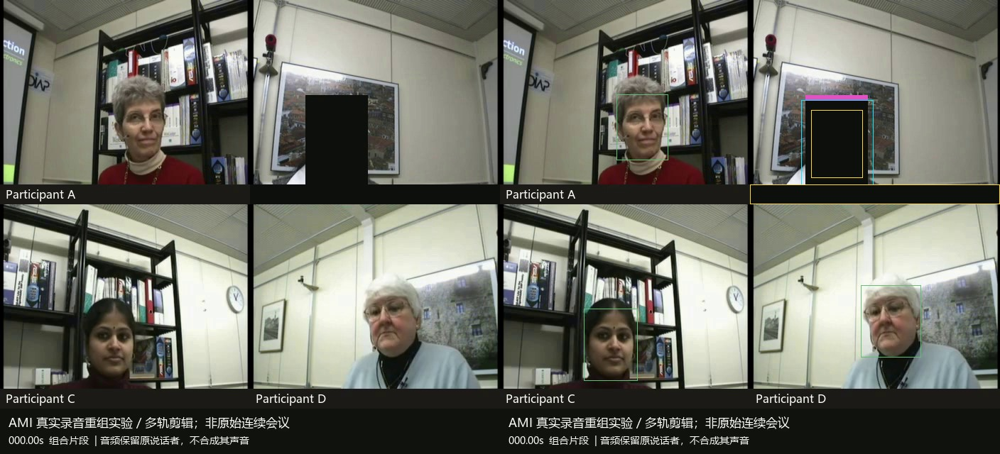
v3 的评分流程先检查程序硬条件，全部通过后才调用 Qwen3.8-omni-flash 进行 10 分原生声画复核。两份答卷都触发了「目标人脸和姓名条」及「非目标画面和遮罩范围」两项硬失败。评分器直接按已核实的程序项结算，硬失败最高 59 分，验收线为 90 分。
不限时，实际 19.4 分钟。总分 45 / 100，验收未通过。
冻结成片的浏览预览。
| Rubric | 得分 | 分值 |
|---|---|---|
| 目标人脸和姓名条 | 0 | 35 |
| 非目标画面和遮罩范围 | 0 | 10 |
| 成片、工程与封面 | 10 | 10 |
| 音频逐采样一致 | 25 | 25 |
| 字幕与元数据 | 10 | 10 |
| 可辨身份复核 | 未计分 | 4 |
| 重叠发言与语义复核 | 未计分 | 4 |
| 观看可用性复核 | 未计分 | 2 |
every_frame_privacy {"face_coverage": 0.967741935483871, "name_coverage": 1.0}other_people_and_minimal_area {"other_face_damage": 0.0, "outside_allowed": 0.19648093841642228, "frame_mae": 2.4062721946022725, "high_error_fraction": 2.6633522727272726e-05, "private_mean": 4.392842083069787, "private_high_fraction": 0.02423367035788798, "other_mean": 3.4575086058519795, "other_high_fraction": 0.0005267593763168984}帧号从 0 起，按 25 fps 换算时间。任一帧触发失败即可使对应 Rubric 项得 0 分。同一帧可触发多项检查。
| Rubric | 触发检查 | 帧数 | 首个 | 最严重 |
|---|---|---|---|---|
| 非目标画面和遮罩范围 | 越界遮罩面积 / 允许区面积 | 2,845 | 帧 0 · 00:00.00 | 帧 6892 · 04:35.68 |
| 目标人脸和姓名条 | B 人脸覆盖率 | 300 | 帧 307 · 00:12.28 | 帧 6850 · 04:34.00 |
| 目标人脸和姓名条 | 目标区最大平均色差 | 297 | 帧 307 · 00:12.28 | 帧 6850 · 04:34.00 |
| 目标人脸和姓名条 | 目标区色差超过 24 的最大像素比例 | 300 | 帧 307 · 00:12.28 | 帧 6851 · 04:34.04 |
■ 漏遮 ■ 遮罩越界 ■ 遮到他人脸 ■ 目标区成片色差 ■ 他人脸成片色差
越界遮罩面积 / 允许区面积（首个）

B 人脸覆盖率（首个）；目标区最大平均色差（首个）；目标区色差超过 24 的最大像素比例（首个）
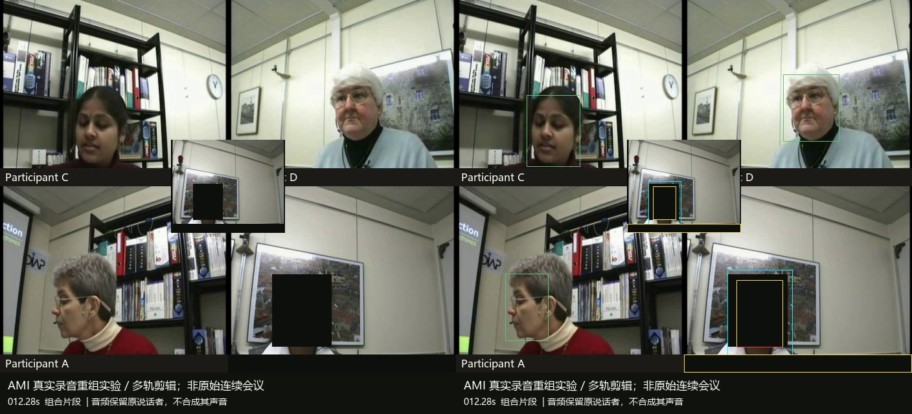
B 人脸覆盖率（最严重）；目标区最大平均色差（最严重）
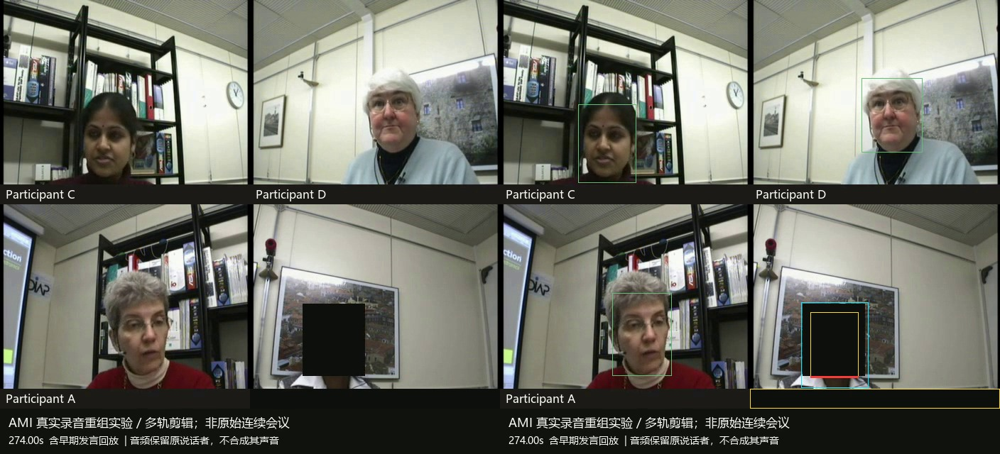
目标区色差超过 24 的最大像素比例（最严重）
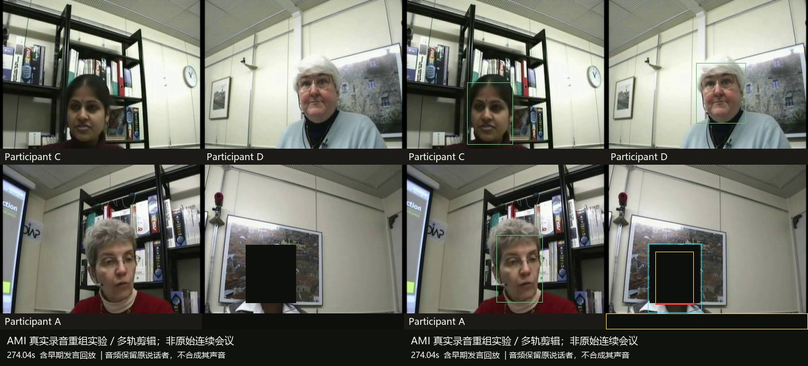
越界遮罩面积 / 允许区面积（最严重）
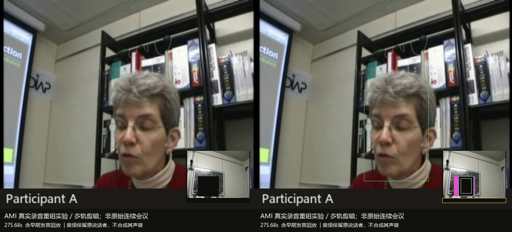
不限时，实际 78.1 分钟。总分 45 / 100，验收未通过。
冻结成片的浏览预览。
| Rubric | 得分 | 分值 |
|---|---|---|
| 目标人脸和姓名条 | 0 | 35 |
| 非目标画面和遮罩范围 | 0 | 10 |
| 成片、工程与封面 | 10 | 10 |
| 音频逐采样一致 | 25 | 25 |
| 字幕与元数据 | 10 | 10 |
| 可辨身份复核 | 未计分 | 4 |
| 重叠发言与语义复核 | 未计分 | 4 |
| 观看可用性复核 | 未计分 | 2 |
every_frame_privacy {"face_coverage": 0.0, "name_coverage": 0.0}other_people_and_minimal_area {"other_face_damage": 0.08676582761250953, "outside_allowed": 0.7871805613741097, "frame_mae": 2.4098233309659087, "high_error_fraction": 2.6633522727272726e-05, "private_mean": 47.612698412698414, "private_high_fraction": 0.8620915032679739, "other_mean": 16.54932036413518, "other_high_fraction": 0.17832647462277093}帧号从 0 起，按 25 fps 换算时间。任一帧触发失败即可使对应 Rubric 项得 0 分。同一帧可触发多项检查。
| Rubric | 触发检查 | 帧数 | 首个 | 最严重 |
|---|---|---|---|---|
| 目标人脸和姓名条 | B 姓名条覆盖率 | 7,500 | 帧 0 · 00:00.00 | 帧 1000 · 00:40.00 |
| 目标人脸和姓名条 | 目标区最大平均色差 | 7,500 | 帧 0 · 00:00.00 | 帧 2540 · 01:41.60 |
| 非目标画面和遮罩范围 | 越界遮罩面积 / 允许区面积 | 7,500 | 帧 0 · 00:00.00 | 帧 6892 · 04:35.68 |
| 目标人脸和姓名条 | B 人脸覆盖率 | 1,380 | 帧 250 · 00:10.00 | 帧 250 · 00:10.00 |
| 目标人脸和姓名条 | 目标区色差超过 24 的最大像素比例 | 1,494 | 帧 250 · 00:10.00 | 帧 6297 · 04:11.88 |
| 非目标画面和遮罩范围 | 非目标人脸被遮挡比例 | 625 | 帧 1000 · 00:40.00 | 帧 2599 · 01:43.96 |
| 非目标画面和遮罩范围 | 非目标人脸最大平均色差 | 625 | 帧 1000 · 00:40.00 | 帧 4106 · 02:44.24 |
| 非目标画面和遮罩范围 | 非目标脸色差超过 32 的最大像素比例 | 625 | 帧 1000 · 00:40.00 | 帧 5606 · 03:44.24 |
■ 漏遮 ■ 遮罩越界 ■ 遮到他人脸 ■ 目标区成片色差 ■ 他人脸成片色差
B 姓名条覆盖率（首个）；目标区最大平均色差（首个）；越界遮罩面积 / 允许区面积（首个）
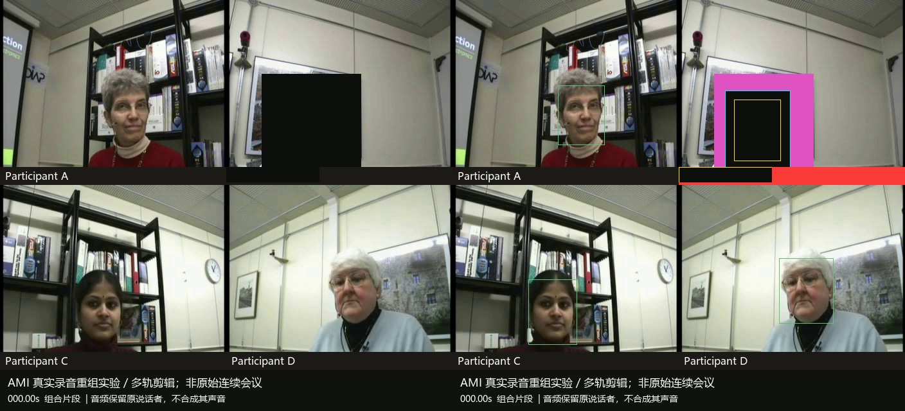
B 人脸覆盖率（首个）；目标区色差超过 24 的最大像素比例（首个）
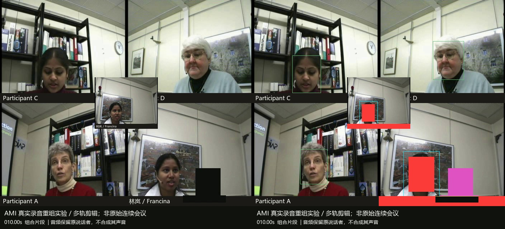
B 姓名条覆盖率（最严重）；非目标人脸被遮挡比例（首个）；非目标人脸最大平均色差（首个）；非目标脸色差超过 32 的最大像素比例（首个）
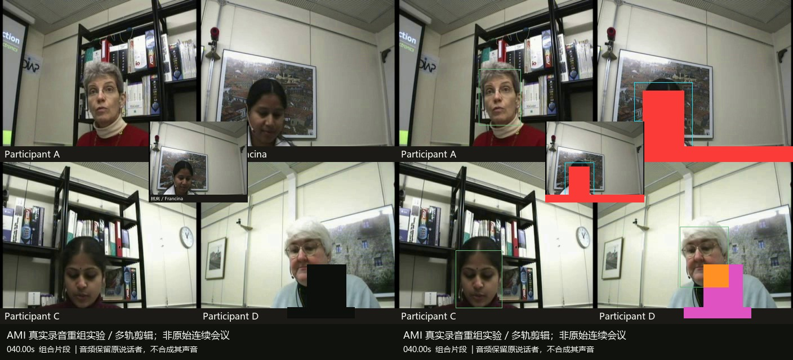
目标区最大平均色差（最严重）
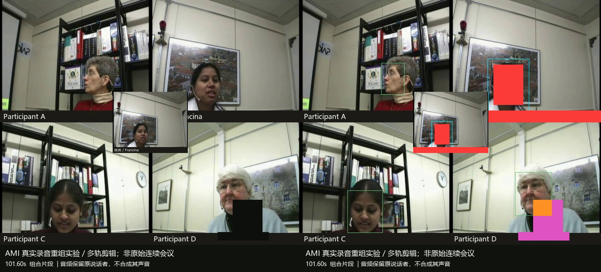
非目标人脸被遮挡比例（最严重）
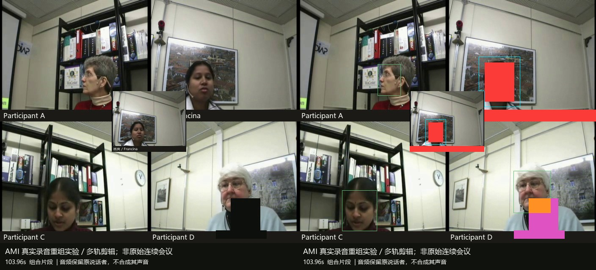
非目标人脸最大平均色差（最严重）
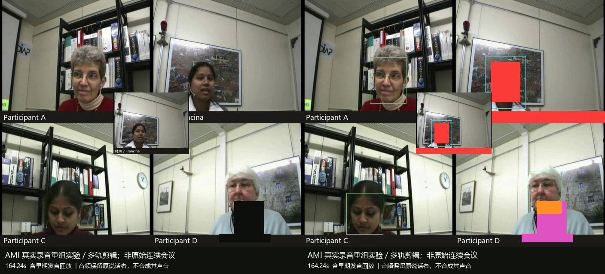
非目标脸色差超过 32 的最大像素比例（最严重）
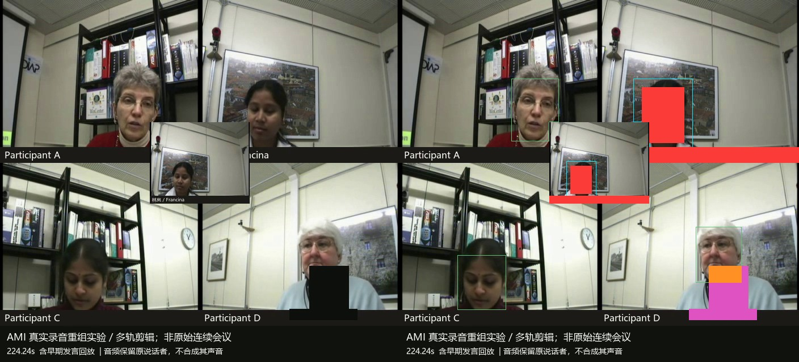
目标区色差超过 24 的最大像素比例（最严重）
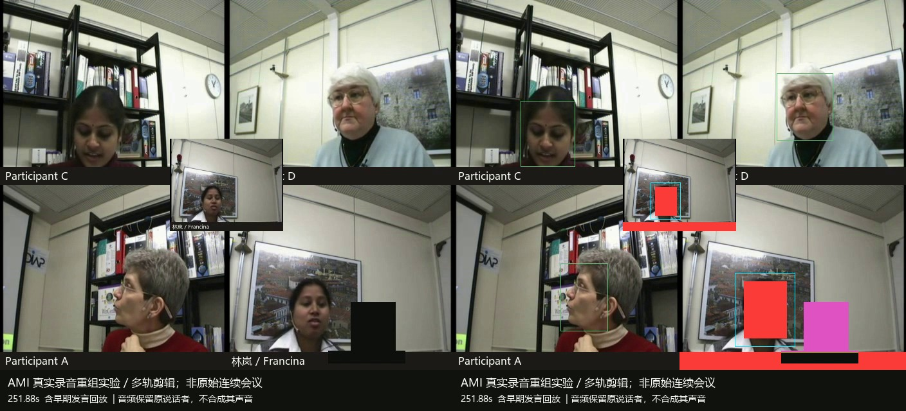
越界遮罩面积 / 允许区面积（最严重）
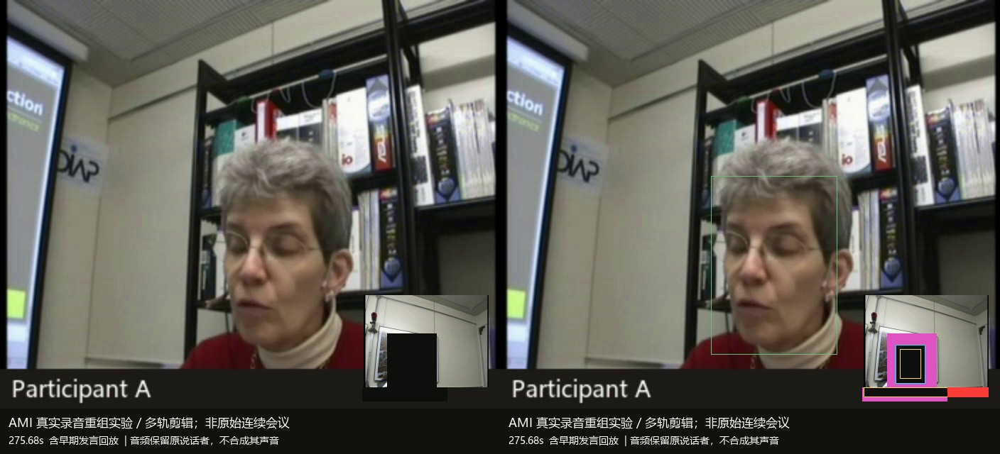